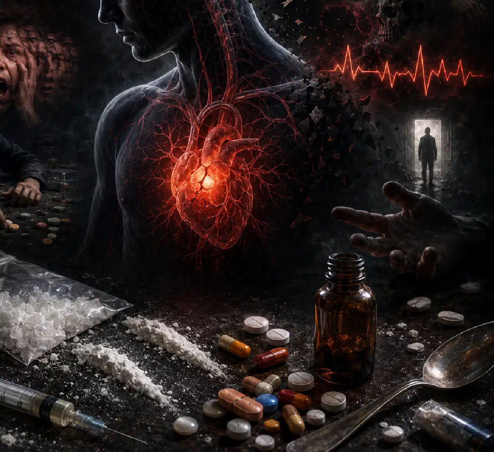

+38(068) 79 72 782
+38(068) 79 72 782Драгси: що це таке і чим вони небезпечні
Короткий ефект із небезпечними наслідками


Безкоштовна консультація, працюємо цілодобово 24/7
Короткий ефект із небезпечними наслідками

Дата написання: 17 лип. 2026 р.
Останнє оновлення: 18 лип. 2026 р.
«Драгси» — це розмовна сленгова назва наркотиків та інших психоактивних речовин. Термін не використовується як офіційний медичний діагноз і може мати різне значення залежно від контексту. Зазвичай під ним мають на увазі речовини, які змінюють настрій, свідомість, сприйняття, мислення або поведінку людини.
Психоактивні речовини впливають на роботу центральної нервової системи. Одні спричиняють збудження та підвищену активність, інші пригнічують реакції та дихання, а треті змінюють сприйняття навколишнього світу. Небезпека залежить від виду речовини, прийнятої кількості, індивідуальної чутливості, наявності захворювань і поєднання з алкоголем або іншими препаратами. Навіть одноразове вживання може призвести до інтоксикації, паніки, порушення серцевого ритму, судом, втрати свідомості або передозування. Додатковий ризик пов’язаний із невідомим складом нелегальної речовини: людина не може достовірно знати її концентрацію, домішки та фактичне дозування.
Слово «драгси» утворилося від англійського drugs. В англійській мові слово drug може означати як лікарський засіб, так і наркотичну речовину. У російськомовному та україномовному сленгу форма «драгси» найчастіше використовується саме для позначення наркотиків або речовин, які вживають із немедичною метою. Термін набув поширення у розмовній мові, соціальних мережах, музиці та молодіжному середовищі. Однак за одним сленговим словом неможливо визначити, про яку саме речовину йдеться. Під «драгсами» можуть мати на увазі абсолютно різні за дією та ступенем небезпеки препарати. У медичній практиці використовуються точніші поняття: психоактивні речовини, наркотичні засоби, психостимулятори, опіоїди, канабіноїди, галюциногени, седативні препарати та інші групи. Така класифікація допомагає оцінити ймовірні симптоми, ризик передозування та необхідний формат лікування.
Драгсами можуть називати речовини, які впливають на психічний стан і роботу нервової системи. До них у розмовній мові відносять стимулятори, опіоїди, канабіноїди, психоделіки, седативні препарати, синтетичні суміші та інші психоактивні речовини. Деякі препарати мають законне медичне застосування, але стають небезпечними при вживанні без призначення лікаря, перевищенні дози або поєднанні з іншими речовинами.
Саме слово «наркотик» не завжди точно описує походження та медичний статус препарату. При регулярному вживанні, появі потягу та втраті контролю людині може знадобитися комплексне лікування залежності, яке включає медичну допомогу, психотерапію та профілактику повторного вживання. Особливо непередбачуваними вважаються нелегальні синтетичні речовини. Їхня назва та зовнішній вигляд не гарантують певного складу. В одній дозі можуть бути присутні сполуки з різною концентрацією та механізмом дії. Неможливо надійно визначити безпечність невідомої речовини за кольором, запахом, формою таблетки або розповідями інших людей. Навіть речовини з однієї партії можуть помітно відрізнятися за складом.
Психостимулятори посилюють активність центральної нервової системи. Після їх уживання можуть виникати збудження, безсоння, прискорене серцебиття, підвищення артеріального тиску, тривога та підозрілість. При тяжкій інтоксикації можливі перегрівання, судоми, психоз і серцево-судинні ускладнення.
Психоактивні речовини змінюють передачу сигналів між нервовими клітинами. Вони можуть посилювати, блокувати або імітувати дію речовин, які природним чином беруть участь у роботі головного мозку. Одні наркотики спричиняють різке відчуття задоволення або приплив енергії. Інші зменшують тривогу, притупляють біль або змінюють сприйняття. Повторний вплив може призводити до адаптації нервової системи, розвитку толерантності та посилення бажання знову вжити речовину.
Залежність розглядається як складний медичний розлад, при якому людина продовжує вживання, незважаючи на негативні наслідки. Вона може супроводжуватися нав’язливим пошуком речовини, втратою контролю та повторними зривами. Наркотики впливають не лише на головний мозок. Вони можуть порушувати роботу серця, судин, легень, печінки, нирок і травної системи. Ін’єкційне вживання додатково підвищує ризик інфекцій і пошкодження судин. Реакція організму не завжди відповідає очікуваному ефекту. Один і той самий препарат у різних людей може спричинити сонливість, збудження, паніку, агресію або втрату свідомості.
Поширена думка про те, що одноразове вживання обов’язково минає без наслідків, є помилковою. Тяжка інтоксикація може виникнути вже після першого епізоду, особливо якщо склад, концентрація та кількість речовини невідомі. Одноразове вживання може призвести до панічної атаки, психозу, порушення координації, травми, судом, аритмії, втрати свідомості або пригнічення дихання. Ризик підвищується при захворюваннях серця, епілепсії, психічних розладах та одночасному прийманні лікарських препаратів. При погіршенні самопочуття може знадобитися крапельниця від наркотиків, але рішення про проведення інфузійної терапії лікар ухвалює лише після оцінки стану пацієнта.
Особливо небезпечним є передозування опіоїдами. Людина може виглядати так, ніби спить, але при цьому рідко або поверхнево дихати та не реагувати на звернення. У такій ситуації домашня крапельниця не замінює екстреної медичної допомоги. Невідомі домішки також підвищують імовірність отруєння. Під однією назвою можуть поширюватися речовини з різною дією, тому попередній досвід не дає змоги визначити безпечну дозу. Навіть якщо гострі симптоми минули самостійно, після вживання можуть зберігатися тривога, безсоння, пригнічений настрій, порушення сприйняття та сильний потяг до повторного приймання.
Ознаки вживання залежать від конкретної речовини. У людини можуть змінюватися настрій, мовлення, рухова активність, сон, апетит і здатність підтримувати звичайний контакт. При вживанні стимуляторів можливі надмірна активність, безсоння, багатослівність, дратівливість, розширені зіниці та підвищена пітливість. Після завершення дії речовини нерідко виникають виражена втома, апатія та пригнічений настрій. При вживанні опіоїдів можуть спостерігатися сонливість, уповільнене мовлення, звужені зіниці, зниження реакції на оточення та порушення координації. Небезпечною ознакою є рідке або поверхневе дихання.
Седативні препарати можуть спричиняти хиткість ходи, нечітке мовлення, загальмованість і провали в пам’яті. Психоделіки можуть супроводжуватися незвичною поведінкою, страхом, галюцинаціями та втратою орієнтації. Окремий симптом не доводить факту вживання наркотиків. Подібні зміни трапляються при захворюваннях, побічній дії ліків і сильному перевтомленні. Остаточну оцінку повинен проводити медичний спеціаліст.
Наркотична інтоксикація може проявлятися прискореним або уповільненим серцебиттям, стрибками артеріального тиску, нудотою, блюванням, тремором, пітливістю, запамороченням і порушенням координації. Деякі речовини спричиняють підвищення температури, виражене збудження, напруження м’язів і судоми. Інші призводять до сонливості, зниження артеріального тиску та уповільнення дихання. До небезпечних фізичних симптомів належать втрата свідомості, неможливість розбудити людину, рідке або нерегулярне дихання, посиніння губ, сильний біль у грудях, судоми та різке погіршення стану.
При змішаній інтоксикації симптоми можуть бути суперечливими. Наприклад, людина може одночасно виглядати збудженою та періодично втрачати свідомість. Це ускладнює самостійну оцінку та підвищує необхідність термінового медичного огляду. При підозрі на отруєння не можна змушувати людину ходити, приймати холодний душ або пити велику кількість рідини. Такі дії не нейтралізують речовину та можуть погіршити стан.
Після вживання наркотиків можуть виникати тривога, панічні атаки, дратівливість, підозрілість, безсоння та емоційна нестабільність. Деякі речовини здатні провокувати галюцинації та втрату зв’язку з реальністю. Під час інтоксикації людина може неправильно оцінювати небезпеку, намагатися втекти, вступати в конфлікти або вчиняти ризиковані дії. При вираженій дезорієнтації її не можна залишати саму — може знадобитися детоксикація крапельницею або госпіталізація залежно від тяжкості стану.
Після завершення дії речовини іноді зберігаються пригнічений настрій, відчуття спустошення, порушення сну та труднощі з концентрацією. Ці симптоми можуть підвищувати ймовірність повторного вживання. Тривале вживання пов’язане зі змінами поведінки, зниженням інтересу до навчання, роботи та стосунків, фінансовими проблемами й погіршенням здоров’я. Залежність є медичним станом, а не просто нестачею сили волі. Якщо галюцинації, підозрілість, тривога або дезорієнтація зберігаються після завершення інтоксикації, необхідна консультація психіатра або нарколога.
Поєднання наркотиків з алкоголем робить реакцію організму менш передбачуваною. Спиртне впливає на центральну нервову систему та може посилювати дію седативних препаратів, снодійних засобів і опіоїдів. При такому поєднанні підвищується ризик вираженої сонливості, блювання, втрати координації, падіння артеріального тиску, порушення свідомості та пригнічення дихання. Людина може не помічати небезпечних симптомів і продовжувати вживання. Якщо погіршення стану пов’язане з тривалим вживанням спиртного, може знадобитися послуга виведення із запою вдома, однак домашня допомога можлива лише після оцінки свідомості, дихання та загального стану пацієнта. При підозрі на змішану інтоксикацію необхідно обов’язково повідомити лікаря про всі прийняті речовини.
Поєднання алкоголю зі стимуляторами не нейтралізує їхню дію. Воно може маскувати суб’єктивне відчуття сп’яніння, водночас збільшуючи навантаження на серце та погіршуючи здатність контролювати поведінку. Особливо небезпечно змішувати алкоголь із невідомими таблетками або порошками, оскільки передбачити взаємодію речовин без інформації про їхній склад неможливо. Якщо після поєднання алкоголю з наркотиком людина не прокидається, погано дихає, має судоми, синіє або втрачає свідомість, необхідна екстрена медична допомога.
При підозрі на наркотичне отруєння необхідно одразу оцінити, чи перебуває людина у свідомості та чи нормально вона дихає. Якщо пацієнт не реагує, дихає рідко, має судоми або синіє, потрібно викликати екстрену медичну допомогу. До приїзду нарколога слід прибрати небезпечні предмети та забезпечити доступ свіжого повітря. Людину без свідомості, яка продовжує дихати, необхідно обережно повернути на бік, щоб зменшити ризик потрапляння блювотних мас у дихальні шляхи.
Не можна давати алкоголь, каву, енергетичні напої, снодійні, заспокійливі або невідомі препарати. Не слід самостійно викликати блювання чи намагатися силоміць напоїти людину. Якщо є підозра на опіоїдне передозування і поруч є налоксон, його застосовують відповідно до інструкції, одночасно викликаючи екстрену допомогу. Налоксон може тимчасово відновити дихання, але дія деяких опіоїдів триває довше, тому медичне спостереження залишається обов’язковим. Лікарям необхідно повідомити все, що відомо про прийняту речовину, час уживання та можливі поєднання. Ця інформація потрібна для вибору безпечного лікування, а не для засудження пацієнта.
Нарколога можна викликати при вираженій слабкості, тривозі, безсонні, нудоті, ломці, треморі та погіршенні загального стану після вживання психоактивних речовин. Спеціаліст оцінює свідомість, дихання, артеріальний тиск, пульс і можливість надання допомоги вдома. Домашній виклик підходить лише для відносно стабільного пацієнта. Якщо людина перебуває у свідомості, нормально дихає та підтримує контакт, лікар може провести огляд, призначити симптоматичну терапію та визначити необхідність детоксикації. При проблемах, пов’язаних із тривалим уживанням алкоголю, окремим напрямом допомоги є виведення із запою вдома, яке також проводиться лише після оцінки стану пацієнта.
При втраті свідомості, судомах, порушенні дихання, посинінні губ, сильному болю в грудях, високій температурі, тяжкому психозі або неможливості розбудити людину необхідно викликати не планову домашню допомогу, а екстрену медичну службу. Нарколог також може знадобитися після завершення гострої інтоксикації. Лікар допомагає оцінити ризик залежності, підібрати подальше лікування та знизити ймовірність повторного вживання. Не рекомендується приховувати від спеціаліста інформацію про прийняті речовини та лікарські препарати, оскільки навіть приблизні відомості можуть вплинути на тактику допомоги.
Детоксикація спрямована на медичну стабілізацію пацієнта, зменшення окремих симптомів інтоксикації або синдрому відміни та попередження ускладнень. Вона може проводитися вдома або у стаціонарі залежно від тяжкості стану. Під час детоксикації лікар контролює свідомість, дихання, пульс, артеріальний тиск, температуру та інші показники. Інфузійна терапія призначається за наявності показань, наприклад при зневодненні або неможливості самостійно вживати рідину.
Крапельниця від алкоголю або інфузійна терапія після наркотиків не є універсальним способом миттєвого виведення всіх психоактивних речовин. Склад допомоги залежить від прийнятої речовини та клінічного стану. При деяких отруєннях основне значення мають підтримка дихання, застосування спеціальних препаратів і стаціонарне спостереження. Детоксикація допомагає пройти гострий період, але сама по собі зазвичай не усуває залежність і не запобігає повторному вживанню. Після стабілізації необхідний подальший план лікування та відновлення. Міжнародні стандарти розглядають допомогу при розладах, пов’язаних із вживанням наркотиків, як комплекс медичних і психосоціальних заходів. При тяжкій інтоксикації, змішаному вживанні, судомах і порушенні свідомості детоксикацію безпечніше проводити у стаціонарі.
Лікування наркотичної залежності підбирається індивідуально. Воно може включати медичну діагностику, психотерапію, роботу з мотивацією, підтримку сім’ї, профілактику зриву та лікування супутніх психічних або соматичних захворювань. Для деяких розладів існують ефективні медикаментозні методи. При опіоїдній залежності у медичній практиці застосовуються метадон, бупренорфін і налтрексон. Вибір препарату залежить від стану пацієнта, періоду після останнього вживання та наявних протипоказань.
Психотерапія допомагає розпізнавати ситуації, які провокують уживання, змінювати звичні моделі поведінки та формувати навички попередження зриву. Підтримка не завершується після детоксикації організму. Залежність може супроводжуватися повторними епізодами вживання, але зрив не означає, що лікування є марним. План допомоги може коригуватися з урахуванням причин погіршення. Найкращі результати зазвичай пов’язані з поєднанням медичного лікування, психологічної підтримки та тривалого спостереження. Міжнародні стандарти підкреслюють необхідність доступної, науково обґрунтованої та добровільної допомоги.
Анонімна наркологічна допомога дозволяє звернутися за консультацією без страху осуду та обговорити вживання речовин у конфіденційній обстановці. Перед зверненням варто уточнити у вибраному медичному закладі, які дані він збирає та як зберігає медичну інформацію. Лікар оцінює стан пацієнта, визначає необхідність домашньої детоксикації або госпіталізації та пропонує подальший план лікування. Допомога повинна надаватися за інформованою згодою людини, крім передбачених законодавством екстрених ситуацій.
Конфіденційний формат не скасовує вимог безпеки. При порушенні дихання, втраті свідомості, судомах або тяжкому психозі домашня процедура не повинна замінювати екстрену госпіталізацію. Після стабілізації стану пацієнт може продовжити лікування амбулаторно, пройти реабілітаційну програму або отримувати медикаментозну та психотерапевтичну підтримку. Своєчасне звернення до нарколога допомагає зменшити ризик повторної інтоксикації, передозування та подальшого погіршення фізичного і психічного здоров’я.

Статтю перевірено експертом
Могучев Станіслав
Лікар-терапевт, ординатор
Можливо цікава стаття:
Термінологія та жаргон наркоманів

Так, ми суворо дотримуємося повної конфіденційності на всіх етапах лікування. Інформація про пацієнта, діагноз та проходження терапії не передається третім особам. Звернення до нас не тягне за собою постановку на облік. Ви можете бути впевнені у безпеці та анонімності.
Програма лікування розробляється індивідуально після консультації з фахівцем. Враховуються вид залежності, її тривалість, фізичний та психологічний стан пацієнта. Такий підхід дозволяє підвищити ефективність терапії та знизити ризик зриву. Ми не використовуємо шаблонні рішення.
Так, ми супроводжуємо пацієнтів і після основного курсу лікування. Проводяться консультації, рекомендації щодо адаптації та профілактики рецидивів. За потреби можлива подальша психологічна підтримка. Це допомагає зберегти результат та повернутися до повноцінного життя.
Номер телефону:
+380 (68) 797 27 82
+380 (50) 021 69 57
Адресу наркологічного центра вашого міста уточнюйте за
телефоном
Працюємо: Київ, Одеса, Львів, Харків, Дніпро, Запоріжжя,
Черкасах, Чугуєві, Чорноморську, Кам'янському
Telegram: t.me/umbrellaplus
Графік работы: Цілодобово